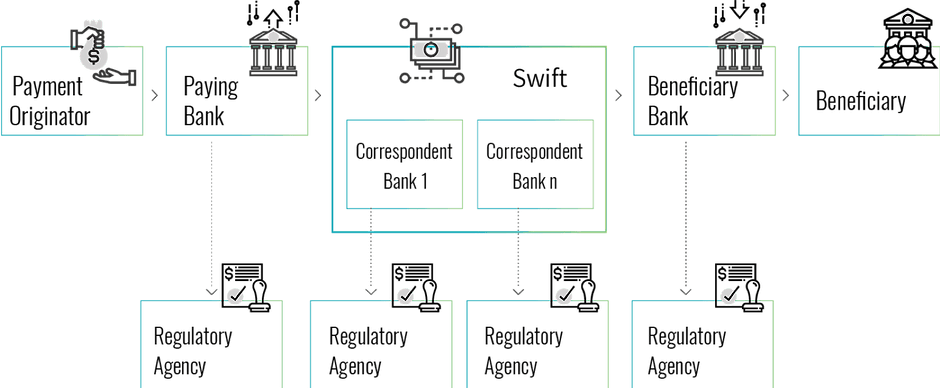
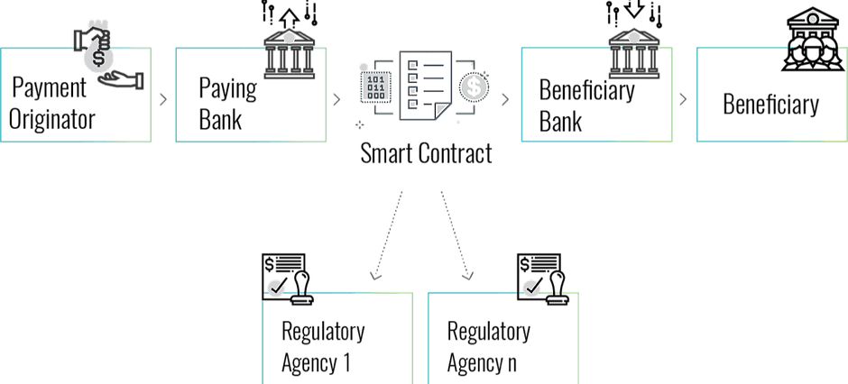

Banks act as financial mediators and constitute a cornerstone of the modern economy. Originally, they were mainly providing liquidity. However, over the years their importance has amplified. Today, banks fill a critical role in various aspects: from financing companies and ventures to stabilizing market growth rates. There is no question that an advanced and efficient banking system is a prerequisite for a properly functioning economy. This paper focuses on the influence of blockchain technology on the financial services provided by commercial banks. These banks serve retail and corporate customers, providing them with a wide array of services:
Account management: deposits, savings, investments, etc.
Credit services: lines of credit, international payment, letters of credit/documentary credit
Other financial services: foreign exchange, securities trading, trusteeship, custody
We believe that blockchain technology will be an important milestone in the evolution of the banking system, and indeed could be transformative to their business. It is clear to us that banks will have to continuously adapt in order to keep up with competition. In order to explain the potential impact of blockchain to the banking industry, we have chosen in this paper to review three exemplary financial services and explain the potential impact of blockchain on these services from a slightly different angle:
Payment services and Interbank Clearing – a common service, that is dramatically simplified using blockchain, and that is gradually being adopted by leading banks
Cryptographic wallets – a new service that is still not provided by banks, but mostly by start-up companies, and that banks could start providing rather easily if they choose to
KYC as-a-service – a brand new line of business not provided by anyone, and that is relying on one of the banks’ core competencies
It would be worthwhile mentioning that the last two of the above are among the largest obstacles for mass adoption of blockchain consumer use, and therefore hold immense potential for new business opportunities. It is also important to note that commercial banks fulfill another critical role in the national economy: increasing the money supply by granting credit within a reserve ratio as required by law. This aspect of their activity is beyond the scope of this paper. A quick review of blockchain and smart contracts before we delve into the nuances of their effect on the banking field:
What is Blockchain?
Blockchain is an innovative technology that combines modern cryptography and decentralized systems. The fundamental difference between a centralized and a decentralized system is the manner in which decisions are made, for instance, when trying to update a database. While in a centralized system there is a single entity that is the sole responsible for decision-making, in a decentralized system a number of independent entities are required to collaborate. Neither has any information on the credibility of the others. Therefore, it is up to the protocol to decide whether a new input is reliable or not. This may be highly challenging when malicious entities are trying to compromise the system. To this end, blockchain protocols can verify whether new transactions conform with the rules agreed upon, even if the parties involved do not trust each other. For instance, Bitcoin is a blockchain network that allows bitcoin wallet owners to transfer payments, without a central authority that is in charge of clearing the transactions. According to this specific protocol, only private cryptographic key owners may execute transactions using their corresponding wallets. Transactions that are transmitted over the network are validated by network operators, AKA miners, who are entrusted with updating the distributed database, i.e. deciding which transactions are valid and updating wallet balances accordingly.
Smart Contracts
Nick Szabo, a renowned computer scientist and legal scholar, was the first to come up with this ingenious concept. If a computer had control of various assets (money, securities, writes of ownership, etc.) it would be possible to write program code in order to trade them. Put differently, it would be possible to create a legal contract, written as an executable computer code rather than as a text document. To the extent that the parties involved approve the code, i.e. the contract, and agree to its terms, they can sign it with their digital signatures. Such a contract is known as a smart contract, since a computer is executing the terms automatically. Many blockchain protocols allow writing smart contracts; in other words, running a computer code to execute changes in cryptographic assets, once their owners have digitally signed. With the above understanding in place, we can now begin to explain the impact these technologies will have on financial institutions:
Financial Services Analysis
1. Payment Services and Interbank Clearing
By “payment services” we refer to the execution of wire transfers in exchange for some sort of service, commodity, or other legal obligation. Whenever both ends of the transaction are not customers of the same bank, this service becomes more complex and involves multiple intermediaries. According to a 2016 World Bank report§, the overall volume of wire transfers made by retail customers in 2015 was estimated at $600B. A recent World Bank analysis pegs the average fee for these sorts of payments at 7.13% of the amount transferred.
The Current Payment Process:

The payment originator, asks his bank, the paying bank, to wire money to a certain beneficiary, whose account is managed at a different bank. The paying bank initiates a KYC process and charges the associated fee
The paying bank then turns to the SWIFT network or any other correspondent bank to transfer the funds and to indicate the beneficiary bank
If the correspondent bank is connected directly to the beneficiary bank, it will transfer the funds. If not, the correspondent will look for another correspondent bank. This continues until a connection is established with the beneficiary bank
Once the beneficiary bank is notified by SWIFT or by the correspondent that the funds are on their way, it then notifies its customer, the beneficiary. It usually asks for some information about the source of these funds
Upon receiving sufficient information about the payment originator and the beneficiary, the beneficiary bank finally transfers the money to the beneficiary. When necessary, the bank may provide add-on services, such as currency exchange services
From time to time the beneficiary bank is required to report to relevant regulatory agencies about certain transfers that have been received, usually for AML purposes
§ Migration and Remittance Factbook 2016
Difficulties during this process:
Payment originator KYC process – this information-gathering process is for the most part manual and prone to human error. Furthermore, there are often difficulties in verifying the supporting documents provided by the payment originator as part of the this process
Use of the SWIFT network requires multiple fees and may take up to several days before a transaction is completed
The correspondent bank must always set aside sufficient liquid assets to back up and implement future transfers. This results in increased hedging costs and a loss of alternative income from these resources
Beneficiary KYC – the beneficiary bank, same as the paying bank, is prone to human error during the KYC process for its customer. These mistakes would likely face consequences with the relevant regulatory bodies come reporting time. Moreover, the bank is obliged to maintain dedicated reporting systems, whose only purpose is responding to potential requests by regulatory agencies
This entire process is manual, therefore, there is a higher probability of a human error during the data transfer, which might result in further delays
An Alternative Blockchain-based Process:

The paying originator is identified by traditional procedures or via a digital identity registrar
The funds are transferred between the banks via smart contracts, reflecting the terms reached between the parties. As soon as both banks confirm their KYC, the transfer is immediately processed
Whenever a currency conversion is necessary, it can be carried out by a third party liquidity provider, chosen at an express tender
Once the smart contract is executed, the transaction is registered immutably on the blockchain. In addition, it is reported to the relevant regulatory agencies, allowing them to identify any suspicious or irregular transfers on an ongoing basis, without depending on periodic reports of banks
Advantages of the Alternative Process:
Immediate transaction execution
Minimization of fees resulting in a reduction of intermediaries and a more efficient currency conversion mechanism
Improvement of government oversight efficiency, e.g. AML. Not only is there regulatory oversight at the time of the transaction, but also provides regulatory agencies with direct access to relevant information on all transactions
Automation enables reduction of manpower and minimizes human error
Summary:
Blockchain-based clearing platforms are already in use in leading banks around the world. Still, there are several obstacles to a widespread use of these solutions:
Incompatibility of payment protocols with various AML aspects and user data privacy
As long as there are no sovereign states-issued cryptocurrencies, assets on these platform rely on privately-issued cryptocurrencies or IOUs
There is still no critical mass of banks using such platforms
In our opinion, these problems will be resolved in the next few years. We are in touch with a number of companies trying to resolve the first two of the problems listed above. In addition, we believe that it is a matter of time before central banks will also start using cryptocurrencies
Blockchain-based transactions are likely to minimize the need for current interbank clearing solutions. Furthermore, these transactions will be documented on the network without a central entity (for example, SWIFT)
Blockchain technology should enable banks to execute wire transfers in real time, in a trustworthy and efficient process. This will most likely result in diminished commission incomes af first. However, in the long run it will increase the volume of transactions, including micropayments, so that overall banks may increase their income from this line of service
Blockchain technology will significantly reduce the risk of scams, given the improved user identity verification, as will be discussed in greater detail later on
Despite low transaction volumes, there are already two blockchain-backed clearing platforms in use:
Ripple’s interbank clearing system provides a blockchain-based solution that is somewhat similar to SWIFT
Linq by NASDAQ is used for registering private securities transactions
It was only recently that HSBC and ING announced the first use of blockchain to settle an international food shipment from Argentina to the United States. Likewise, ING and Credit Suisse reported their first blockchain-based €25m bond-buying transaction
2. Cryptographic Wallets
The Status Quo:
Digital payments§ have grown significantly in the last few years. According to a report by BCG, the global volume of digital payments is expected to reach five trillion USD by 2020. Banks and technology companies will have to invest large amounts of resources in order to support these expanding services. This growth will challenge banks who are already concerned with losing market share to non-bank financial services suppliers like Google, Apple, Facebook, Alibaba, PayPal, Amazon, or even Starbucks. However, the above is not the only – nor the most – serious of threats. There are at least two additional implied strategic threats:
Banks will lose access to consumer data and purchase information, therefore will know a lot less about their customers
Payment services often constitute a gateway for building trust between banks and customers. Consuming these services outside the bank is bound to impair the bank-customer relationship, and might reduce the scope of other services provided by the bank
§ In our context, a digital payment may be any sort of payment except for cash or credit card, e.g. mobile wallets, payment applications or payments via web browsers
Wallet for Cryptocurrencies:
We believe that the current level of accessibility and lack of ease of use for cryptographic wallets is one of the major impediments to their mass adoption, and is also holding back growth of the cryptocurrency markets. These wallets are very different from what most consumers are used to, as are many of the elements of blockchain technology. The result is mass reluctance. To get a better sense of the potential market, we suggest the following analysis:
A recent estimate counts about 26m unique§ cryptographic wallet users in the world, as of Q2 2018
A 2012 estimate counted about 2.1b credit cards in circulation worldwide
That same year, it was estimated that the average American had 2 credit cards
Let us take the most conservative assumptions:
The average global card holder is similar to the American one, i.e. holds two cards on average
The number of credit cards and card holders has remained constant in the years since the study
Our conclusion would be that there are currently more than 1BN card holders worldwide. To put this number in perspective – it is 40 times the number of unique wallet owners. This means the potential for growth in user adoption is extremely large. § In this regard, two wallets owned by the same person are counted as a single wallet
Existing Types of Cryptographic Wallets:
Today, there is no definitive leader in crypto wallet management. Here are the main options available:
Wallets without custody services – these include products like Trezor or Ledger Nano; or software like Jaxx, Electrum, and Exodus that require users to create a private key and protect that key by themselves. Use and operation of these wallets requires some degree of knowledge, but also provides the highest quality of security available
Wallet management via cryptocurrency exchanges – once registered for one of these exchanges, a wallet is created for each user. Access to the wallet only occurs via access to the exchange. Every exchange manages custody in conjunction with its own policies, without a single standard and in most cases without any official oversight. It is worth noting that even an exchanges do not provide any sort of security to user deposits. The sheer volume of large tokens that these entities hold make them constantly vulnerable to security threats. Therefore, it is currently inadvisable to store large amounts in these kinds of wallets. In 2014, for example, Mt. Gox exchanged was hacked and attackers made off with 850,000 bitcoin§. This incident, like others afterwards, should serve as a warning sign to any user that sees these wallets as a permanent solution for cryptocurrency deposits
Mobile apps – there are several wallet apps available on Apple Store and Google Play. They purport to provide secure solutions, but most contain low-caliber security, often to the point of fraud. Generally, it is recommended to seldom use such apps, if at all
§ At the time of this hack the bitcoins stoten were valued at $450m. as of writing this paper the total amount exceeds $5B
Summary:
We estimate that cryptocurrency wallet technology will improve dramatically over the next years. As a result, the user base will grow accordingly. Blockchain-based infrastructure is already capable of providing infrastructure to digital wallets. The main gap though remains user experience and a lack of consumer-facing solutions for securing or recovering lost cryptographic keys. This is still the main obstacle that makes current cryptographic wallets inferior in comparison to other centralized institutions
It is interesting to examine the evolution of web browsers as an analogy to cryptographic wallet: Both are gateways to a new and revolutionary technological infrastructure. In addition, using a browser in the early days of the internet required relatively advanced user skills and provided limited offerings. If wallet technology develops along a similar path, user experience will inevitably improve beyond recognition
As cryptographic wallet usage is expected to grow among consumers, one should assume enterprises will start using them as well. This is will drive accelerated development of more sophisticated wallet technology
In our opinion, it is inevitable that banks will offer cryptographic wallet services at some point. Though this may seem like a change in philosophy – a centralized body like a bank offering decentralized services that are likely to cut into the its own operations – however, this process may have positive implications both for banks and their customers:
Banks would garner greater public trust than exchanges for safeguarding accounts. The expanded range of service packages to cover cryptocurrency wallets under bank supervision should reduce public anxiety about new products and technologies
Assuming the markets have huge potential, the first banks to offer such service bundles would be considered innovative, technological leaders. As leaders, they would have the opportunity to attract significant market share for new services and win over new customers for their “traditional” services as well
Even though cryptocurrency payment services run over a decentralized system, there are many other centralized add-on services that banks could still offer. Those might include deposit insurance, custody services, and more. If we assume that a certain proportion of the bank’s customers would migrate to using cryptographic wallets anyway, it is clearly preferable that it is done through a bank-offered service, even if only as an add-on
3. KYC Process
One of the critical tasks of banking operations is verifying the identity of their customers and the entities they are involved with. This is known as the KYC or Know Your Client process. Banks invest tremendous resources into this and constantly strive to improve the procedures. The essence of the process has hardly changed over the years and still requires manual collection and verification of customer credentials. At times, the inability to arrive at a sufficient degree of certainty regarding specific customers presents an obstacle to expanding the bank’s business. Furthermore, any failure in this regard would allow problematic customers slip through the cracks, hence increasing the bank’s overall risk level. Improving this process in a manner that keeps uncertainty to a minimum, would likely make the bank’s operations significantly more efficient while minimizing risk.
Current Process:
The customer provides credentials to any new bank that he/she wants to do business with, based on each bank’s unique best practices. There is always an overlap in terms of the requisite documents, still each bank has slightly different procedures
The bank verifies the customer’s credentials, and when necessary may even request for the assistance of relevant regulatory agencies
The customer repeats this entire process with each bank…
Difficulties with Current KYC Process:
Banks conduct the entire KYC process by themselves and cannot rely on independent third parties to validate a customer’s credentials. In case a customer cannot provide the requisite credentials, the bank must take a risk and decide whether to proceed the onboarding or not
There may be certain situations where the bank requires a regulatory agency’s validation for a customer’s documents or credentials. Assuming that this customer has approached several banks and they all approach the regulatory agency, this duplication of referrals causes an unnecessary overload
Due to banking secrecy considerations, banks cannot share customer data or credentials with other banks. This means that each bank is forced to implement the KYC process redundantly
Due to customer privacy considerations, banks must secure customer data using countless IT platforms. Unwillingly, they have become enormous IT companies, investing invaluable resources in operations and maintenance of computing systems, instead of putting these resources to another use
The Blockchain-based Alternative for KYC:
Customers upload prerequisite documents to the distributed ledger. They are the only ones who have full access to that information and control who they share it with
A regulatory agency may verify the documents shared with it. Once it does, the verification is immutable and could be used for any future KYC process
Whenever a customer approaches a bank, all it has to do is grant access to the relevant docs, that have already been approved by the regulatory agency
Advantages:
Customers upload their documents only once. The information is saved securely on the decentralized ledger
When necessary, the regulatory agency verifies these credentials and personal information. The verification is secured both from a privacy perspective and data credibility
The bank does not bear any responsibility for the verification of the documents, as the it was the regulatory agency who has approved them
The bank is not required to store the document, since it already has access to the online decentralized ledger. As a result it no longer needs to operate and maintain redundant IT systems
Summary:
Banks could benefit immensely from blockchain-based digital identity solutions. It may even turn out that they are the ones with the largest incentive to promote it
Improvement of the KYC process would be of great benefit to improving their efficiency from a number of perspectives:
Improvement of customer service and KYC would improve customer experience
The possibility of automating these procedures in conjunction with the profitable reduction of human error, would practically result in the minimization of other risks (operational, regulatory, credit)
Reliance on credible information authenticated by an external, adept, and independent party
Improvement in the quality of customer data makes it possible to better adapt personal banking services according to individual customer needs
In the example above, we discussed customer identification at length, however, banks could easily perform a similar process to verify identification of any other kind of assets, e.g. real estate, vehicle, etc. for the purpose of a more efficient lien management
It was reported recently that 39 banks, among them are Societe Generale, BNP Paribas, the Federal Reserve of Boston, and ABN AMRO, launched trials of the Corda system for blockchain-based KYC. In these trials they were able to conduct 300 international transactions in four days, relying only this framework. Customers’ credentials have been successfully verified based on the alternative procedure described above
It is also worth noting Estonia’s state-sponsored digital identity projects. Following the implementation of the e-Estonia project several years ago, it has become the most advanced sovereign authority to adopt digital identity. Estonia’s goal was the full digitalization of information on government servers, e.g. medical records, tax reports, assets, etc., and their storage over a blockchain network. This system enables Estonians citizens to do so. During the 2014 elections, it was even possible to cast ballots through this system. More countries are already looking into adopting these sorts of solutions. It would be safe to assume that adopting these systems will become increasingly common in the foreseeable future
Conclusion
Blockchain technology is still at its the early stages of having mass influence over our lives. It seems that throughout human history, whenever a new technology begins to gain momentum, a debate arises between evangelists and naysayers. There are those who try to use it to improve existing products and services, as well as skeptics who question its long-term viability and its potential. At this stage, it is still hard to evaluate just how influential blockchain technology will be on our lives. We believe that it will have an enormous influence and will almost certainly have a fundamental effect over systems that have hardly changed in decades. In this paper, we have tried to review a number of banking services that we think will improve due to blockchain technology. Whether the reader believes this technology heralds a revolution in banking or thinks its influence will be negligible, we recommend understanding its essence in order to form an independent opinion on how significant this change could be. Services such as identity verification, ownership restoration, estate management, anti-money laundering solutions, and others are hard to handle and crave disruption. One of the core competencies of a bank is the tangible and direct connection to its customers. New technologies that claim to disrupt current standards lack such a connection. There in which lies the potential of banks to adopt new technological solutions for existing challenges and to continue serving a central role in the new economy.